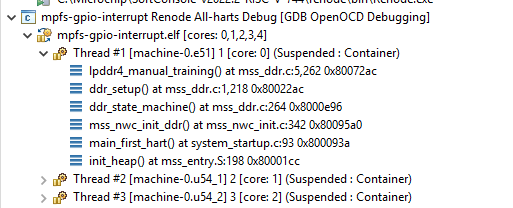

Renode troubleshooting¶

Application doesn’t reach the main breakpoint¶
On PolarFire SoC targets the application doesn’t reach the main breakpoint and when suspended, callstack shows mss_nwc_init_ddr():

The application is executing DDR training, but currently Renode is not supporting the DDR training well, Renode doesn’t need to train the DDR for DDR to work correctly and it’s best to disable the training inside the application. Typically the DDR training is enabled with the DDR_SUPPORT define. Depending on the application and board configuration this define might be defined in various places, but on the bundled mpfs-gpio-interrupt example it’s inside the src/boards/icicle-kit-es/platform_config/mpfs_hal_config/mss_sw_config.h file:
There was an error executing command sysbus.cpu StartGdbServer 3333 true¶
Something is keeping the port 3333 opened, it could be some other application, but in most cases it’s just a previous instance
of the Renode. Close it by pressing X on the window or stop the group launcher which should stop the Renode and the gdb
client as well.
Using OSS tool such as Renode will contaminate my proprietary code?¶
Using the Renode (Open Source Software) will not impose any obligations or restrictions on the user’s code, his license or his IP. In an edge case where the user would copy part of the Renode’s source code, modify it and redistribute its binaries, then there are obligations to meet, however Renode has MIT license and allows wide use (including commercial, private use and sublicensing it with a more restrictive license):
https://tldrlegal.com/license/mit-license
If in doubt consult with a legal team.
Source ID 13802 was not found when attempting to remove it¶
(Renode:5523): GLib-CRITICAL **: Source ID 13802 was not found when attempting to remove it
Possibly caused by not meeting Renode’s dependencies. Renode requires the mono to be at least v5. Double check if the newest versions of the mono-complete, gtk-sharp2 and libcanberra-gtk are installed. And confirm the mono is v5 or higher:
mono --version
Renode source code¶
Upstream sources can be found on GitHub, while the version of source code matching with the bundled binary is supplied in the <SC_INSTALL_DIR>/renode-source-code.
Installation of Renode sources is an optional SoftConsole installation step, if the <SC_INSTALL_DIR>/renode-source-code is not present, then reinstall SoftConsole.
UART analyzer not responding¶
This can happen on Linux when UART is heavily loaded with rapid messages and when Renode is running on a low-end machine (or small VM).
Application could be rewritten to reduce the amount of UART messages, faster machine (or VM) could be used. Or more efficient analyzer can be used. XTerm is significantly faster and more optimized (at a cost aesthetics) terminal emulator which can be used for UART analyzer.
Edit the following file in a text editor:
<SC_INSTALL_DIR>/extras/home/.config/renode/config
And edit the terminal line and point to the XTerm: terminal = XTerm
No GUI when starting the Renode platform¶
When seeing the following error:
[WARNING] Couldn't start UI - falling back to telnet mode
Then it might be an indication of missing dependencies, read the Additional dependencies section.
Note
The Renode’s Monitor is now embedded into the console intentionally, if this is undesired then read the Embedded monitor window section.
Deeply nested code causes crashes and glitches¶
Experiencing a CPU abort message inside Renode:
[ERROR] u54_1: CPU abort [PC=0x0]: Trying to execute code outside RAM or ROM at
0x0000000000000000.
Or causing reboots, glitches or failures (continuous or intermittent) can be a sign of a small stack and a stack overflow, adjust the stack sizes in the linker script or refactor code to conserve the limited stack. See sections:
See:
Note
This error can happen on any hart and is not limited to u54_1, nor PolarFireSoC. Stack overflow can be triggered on any platform and thus the error messages or observed behavior might be slightly different.
What are the Robot references in SoftConsole?¶
SoftConsole v2022.2-RISC-V is bundled with Nokia’s RED (Robot EDitor) plugin. Robot can be used for automated testing of Renode and real hardware targets. Currently the RED is not supported SoftConsole feature and requires additional manual steps to work (which are not documented yet), however users might try to experiment with it at their own risks.
https://renode.readthedocs.io/en/latest/advanced/building_from_sources.html#prerequisites
https://renode.readthedocs.io/en/latest/tutorials/zephyr-ptp-testing.html
Renode on startup crashes with an unhandled exception¶
If the exception message contains the following:
Could not find a part of the path "/<YOUR_PATH>/.renode/history"
Then it could have been caused by moving the SoftConsole installation and the config pointing to the old (and nonexistent) location of the history file. Correct the path inside the <SC_INSTALL_DIR>/extras/home/.renode/config or just delete the config and let Renode to re-create it.